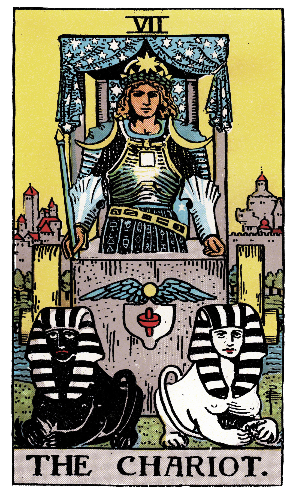

太陽・獅子座のハルさんは、存在感とリーダーシップで周囲を自然と巻き込む力の持ち主。人の前に立つことに抵抗がなく、場の空気を変える華があります。
個人年数8は「達成と権威の年」。これまで培ってきた経験やスキルが、新しい場所でも確かな武器になる年です。転職先でもゼロからではありません。
4月の個人月数3はコミュニケーションと自己表現が鍵になる月。言葉で人と繋がる力が高まっています。現在、木星が蟹座を運行中で、安定した基盤づくりを後押ししています。
星・カード・数字を総合して、初動の立ち回りは3つのアクションに集約されます。
4月前半は火星がまだ魚座。実力を見せるより信頼の土台を作る時期。4月2日の天秤座満月で気持ちを整え、4月10日の火星牡羊座入りまで観察に徹してください。
個人年数8は数字やデータに関わる提案と相性が良い。分析や改善提案など、根拠のある貢献が評価されます。
火のエレメント同士で直感的に通じ合える相手。最初の30日で3人のキーパーソンを見つけて。仕事を教えてくれる人、社内事情に詳しい人、相談相手。
「意志を持って前進する者に、道は開ける」。御者が2頭の馬を制御する姿は「積極性と慎重さの使い分け」を示しています。
入社直後は慎重さ6割、積極性4割。1ヶ月経ったら逆転させてください。
木星が蟹座を運行中。蟹座の木星は「安心できる居場所を築く力」を与えます。新しい職場に根を下ろすことを後押しする配置です。
4月前半は火星が魚座で種まきの時期。4月10日に火星が牡羊座入りすると行動力が一気に高まり、5月20日の牡牛座入り以降は着実な成果が見え始めます。
個人月数3は表現力が冴える月。4月17日の牡羊座新月が新しいスタートに最適なタイミング。金星が牡牛座（本来の座）にあるため、対人関係は安定。自然体でいることが最大の魅力になります。
星の配置が外側の追い風なら、数秘術はハルさんの内側に備わっている力を示しています。
ナンバー5の本質は「変化を恐れず、新しい環境で真価を発揮する力」。動いた先で花開くタイプです。今回の転職はハルさんの本質に合った選択です。
8の年はこれまでの積み重ねが形になる年。過去の経験が新しい環境でも必ず活きます。ゼロからではありません。
聞き役に徹する。4/17の牡羊座新月で仕事の目標を定める月。
5/17新月に提案を出す。5/19火星牡牛座入りで実行力UP。
6/29火星双子座入り+6/30山羊座満月が転換点。発言力と存在感が確立。
◎の日は積極的に動いてOK。△の日は「判断を急がない」だけで十分です。
カレンダーに印をつけて、1週間ごとに見返してみてください。
特に4月17日の牡羊座新月と6月30日の山羊座満月はハルさんにとって最も重要な2日間。この2つの日を意識するだけで、3ヶ月の流れが変わります。
入社初日はネイビーのアイテムを。毎朝の挨拶がハルさんの運気を底上げします。
ビジョンを共有でき、ハルさんの挑戦を応援してくれる
行動力で意気投合。困った時に真っ先に助けてくれる
社内の橋渡し役。人間関係の地図を教えてくれる
ハルさん、星もカードも数字も、揃って「この転職は正解」と伝えています。
初動で一番大切なのは、焦らないこと。獅子座のハルさんは、慣れた頃に自然と輝き始めます。最初の2週間は聞き役に徹して、1ヶ月目の終わりに小さな成果を1つ。それだけで十分です。
3ヶ月後の夏至を迎える頃、「あの時動いてよかった」と思えているはずです。ハルさんの新しいスタートが、素晴らしいものになりますように。